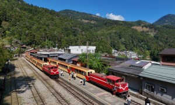
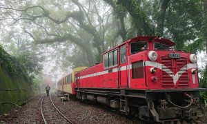
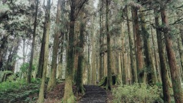

| 隙頂二延平步道 | 奮起湖 | 阿里山森林鐵路 | |
| 隙頂二延平步道 | |
位在阿里山公路上的二延平步道，是阿里山最受歡迎的登山路線之一。登山口交通便利，設有公車直達，非常適合安排一日輕旅行。步道最大的魅力在於能一次欣賞到茶園、雲海與日落等多重景緻，被譽為「阿里山最夢幻的天空步道」。 再往前走幾步，便抵達第一座觀景台。眼前的景色令人屏息，雲海鋪滿整片山谷，潔白翻湧，如同潮水湧動。遠處的山峰在雲霧間若隱若現，宛如漂浮於海中的小島。秋冬正是雲海最盛的季節，這時來訪，總有機會見到這壯闊的一幕；而二延平步道的雲海，更被許多人譽為全台最美之一。 登山口：602嘉義縣番路鄉五鄰隙頂78號 步道全長：約1公里、單趟約1小時 開放時間：全天候 資料來源:dribs & drabs 點點滴滴 top |
|
| 奮起湖 | |
1912年，阿里山森林鐵路建成之後，奮起湖車站是最大的中途養護站，舊時運送木材與乘載工人的列車會在此地停留較長時間，且時間鄰近中午，車員與乘客就會在此地休息，因而造就了奮起湖的鐵路便當文化。同時也使此地成了鐵道沿線中最大的買賣中心與中繼站。 奮起湖三面環山，民居坐落於其中的景緻，使得此地有南台灣的九份之稱。依山而建的屋舍，不經意地就會流露歲月的痕跡，緩步走進約500公尺的老街，就能看見許多攤商販售當地特產，如嗆辣的山葵、愛玉子、樹番茄等。奮起湖飯店旁的木屐館，更是展示了各種形式的木屐，原來此地過去是木屐的製造重鎮，昔日街道多用煤渣鋪設，穿著木屐較為舒適。還可以沿著奮起湖農特產品展售中心旁的步道登高，到觀景台欣賞奮起湖聚落。 地址：嘉義縣竹崎鄉中和村奮起湖 開放時間：每日06:00~21:00 資料來源:交通部觀光署阿里山國家風景區管理處 top |
|
 |
|
| 阿里山森林鐵路 | |
阿里山小火車，又稱阿里山森林鐵路，是嘉義最具代表性的觀光特色之一，也是台灣著名的高山鐵路。鐵路最早建於日治時期，原本主要用途是運送阿里山林場的木材，後來逐漸發展成觀光鐵路，如今已成為許多遊客前往阿里山必體驗的行程。 阿里山小火車從嘉義市出發，一路沿著山區緩緩行駛，途中會經過竹林、森林、山谷與茶園等自然景觀。由於海拔高度變化大，鐵路沿線也能欣賞到不同的氣候與地形景色，讓旅客在搭乘過程中感受到豐富的自然風貌。尤其當列車穿越山林與彎道時，充滿懷舊與悠閒的氛圍，更成為阿里山旅遊的重要特色。 其中，奮起湖站是阿里山小火車的重要停靠站之一，許多遊客會在這裡下車欣賞老街與山城風景。鐵路沿途還保留許多具有歷史感的車站與設施，展現早期林業發展與鐵道文化的歷史價值。 此外，阿里山小火車最受歡迎的路線之一，就是前往祝山觀日列車。旅客可以搭乘小火車前往觀景地點欣賞日出，當陽光從山脈後方緩緩升起，搭配雲海與山景，形成壯麗的自然景色，也成為阿里山最經典的旅遊體驗之一。
地址：嘉北門車站（起點）：嘉義市東區文化路308號 阿里山車站：嘉義縣阿里山鄉中正村阿里山1號 開放時間：每日 08:30 ~16:30 資料來源:嘉義市政府全球資訊網 top |
|
 |
 |